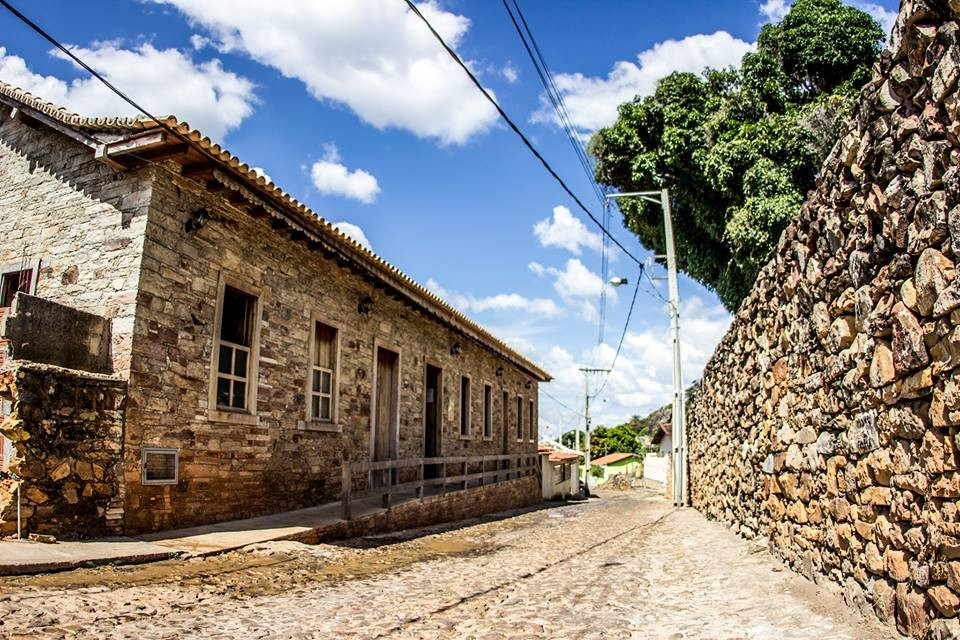

A Fascinante História de Grão Mogol
Grão Mogol, com suas ruas de pedra e casarões centenários, é um livro aberto sobre a história do Brasil, especialmente do ciclo do ouro e da formação de Minas Gerais.
Das Minas ao Município: Uma Trajetória
Fundada por bandeirantes em busca de riquezas minerais, Grão Mogol floresceu no século XVIII devido à descoberta de diamantes e outras pedras preciosas. A presença marcante da Coroa Portuguesa e a influência do ciclo da mineração moldaram sua arquitetura e cultura.
Períodos Importantes:
- Ciclo do Ouro e Diamante (Século XVIII-XIX):
- Descoberta das primeiras minas na região.
- Intensa movimentação de garimpeiros e aventureiros.
- Construção de infraestrutura para a exploração.
- Formação Urbana e Cultural (Século XIX-XX):
- Elevação à categoria de vila e, posteriormente, cidade.
- Construção da Igreja Matriz de Santo Antônio, marco arquitetônico.
- Desenvolvimento de tradições religiosas e folclóricas.
- Atualidade e Preservação (Século XXI):
- Foco no turismo histórico e ecológico.
- Esforços de preservação do patrimônio arquitetônico.
- Valorização da cultura local e do artesanato.
Cada esquina de Grão Mogol respira história, convidando o visitante a uma verdadeira viagem no tempo.